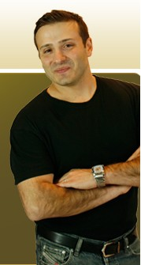
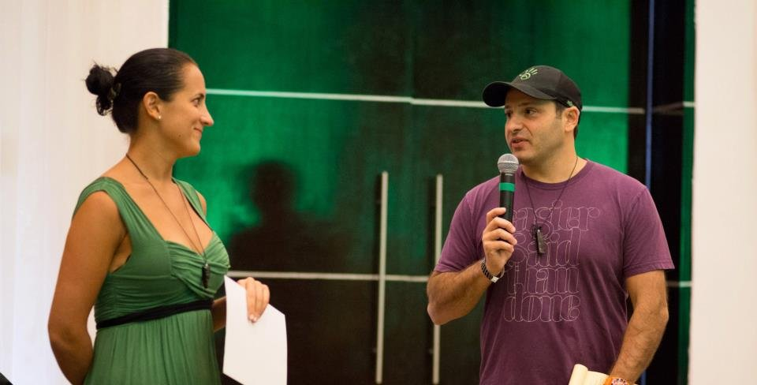
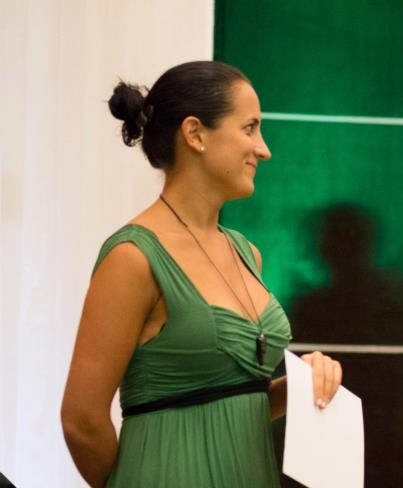

Two forces united by a single belief: business can be the greatest lever for creating a better world.

Yanik Silver grew up watching his father build a medical equipment business after immigrating to the United States from Russia with just $256 in his pocket. That entrepreneurial spirit took root early. By age 14, Yanik was telemarketing for the family business. By 16, he was cold calling on doctors. And by his early twenties, he had discovered the power of direct response marketing and was building multiple ventures from scratch.
In 2000, Yanik woke up at 3 AM with an idea that would become Instant Sales Letters, his first million dollar product. That success opened the door to a career as one of the most respected digital marketing pioneers of the early internet era, building eight different product lines that each crossed the million dollar mark. He went on to create the Underground Online Seminar, a legendary annual gathering of 500+ entrepreneurs that ran for nearly a decade.
But making money was never the full picture for Yanik. He became increasingly drawn to the idea that entrepreneurship could be a force for transformation, not just transaction. That conviction led him to create Maverick1000, a global invitation only network of industry transforming entrepreneurs who connect their head (business sense), heart (impact in the world), and higher purpose.
Through Maverick, Yanik has forged deep relationships with icons like Richard Branson, Sara Blakely, Tony Hawk, and dozens of other world class leaders. Maverick members gather annually at Branson's private Necker Island and have collectively raised over $3,000,000 for charitable initiatives spanning Haitian village development, Amazon rainforest protection, and veteran entrepreneurship programs.
Yanik is the author of several bestselling books including Evolved Enterprise, 34 Rules for Maverick Entrepreneurs, and The Cosmic Journal. His work has been featured in Forbes, The New York Times, The Washington Post, Inc., Bloomberg, CNBC, WIRED, and TechCrunch. He lives in Potomac, Maryland with his wife Missy and their two children, Zack and Zoe.

Every great community needs someone who makes it feel like home. For Maverick1000, that person is Sophia Umanski. Known affectionately as the "Maverick Mom," Sophia has spent more than a decade shaping the experience, energy, and emotional fabric of the Maverick community. She is not just a leader of the organization; she is its living, breathing heartbeat.
A serial entrepreneur and 10 year events industry veteran, Sophia brings a rare combination of operational excellence and deep human intuition to everything she touches. As Chief Experience Architect and President of Maverick NEXT, she oversees member experience from end to end, curating every detail of the gatherings, retreats, and once in a lifetime adventures that define what it means to be a Maverick.
Sophia is the architect behind what Maverick calls "Astonishment Architecture," a proprietary approach to designing experiences that go beyond networking into genuine transformation. From orchestrating Dangerous Dinners and zero gravity flights to arranging for members to spend the night in a real Mayan village during a winter solstice celebration, Sophia approaches every experience with the same philosophy: create something that opens hearts and shifts perspectives.
As co-owner of Maverick1000, Sophia is leading the community forward into its next evolution. Her vision centers on helping each member unlock their full potential for impact while building thriving businesses that become forces for good. Under her leadership, Maverick NEXT has become the premier invitation only network for the next generation of entrepreneurial leaders.
Sophia graduated from the University of Maryland College Park and is based in Miami. Her partnership with Yanik Silver is the foundation upon which Maverick was built and continues to grow. Where Yanik is the cosmic catalyst of vision, Sophia is the grounding force that turns vision into lived experience. Together, they have created something that thousands of entrepreneurs call the most meaningful community of their lives.

Maverick1000 exists at the intersection of three interconnected forces: growth, impact, and happiness. We believe that when head, heart, and higher purpose are aligned, business becomes one of the most powerful tools for shaping the world we want to live in.
Our members are not just entrepreneurs. They are lighthouses in their industries, sun lighters who ignite 1,000 more suns. Together, we are building a legacy that will catalyze solutions to 100 of the world's most pressing challenges by the year 2100.
This is not a networking group. This is a family of visionaries who show up fully, challenge each other to grow, and use their collective power to leave the world unmistakably better than they found it.
Applications are open for visionary entrepreneurs who believe business can be a force for good.
Apply Now